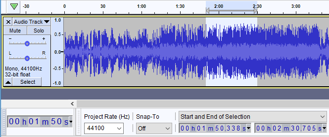
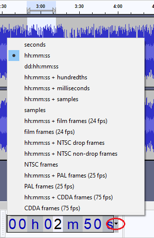

Time Toolbar
From Audacity Development Manual
Time Toolbar is a read-only toolbar which displays the current audio position. When Audacity is not Playing or Recording, this will be either the current cursor position or the beginning of the current selection if present. When Playing or Recording, it dynamically shows the current play head or record head position. As this Toolbar is read-only you cannot use it to reset the audio position, to do that you need to use the Selection Toolbar.
This Toolbar is new for Audacity 2.4.0, it replaces the Audio Position counter that was the Selection Toolbar in 2.3.3 and earlier Audacity.

Audio Position
This toolbar displays the current audio position - the current location of the Play/Record head.

- Time Toolbar showing the current playback position of 44 seconds
Location
It is located by default in the bottom tooldock next to the Selection Toolbar. By default it is double height for easy readability. You can resize it or or relocate it if you wish, see Customizing Toolbar Layout for help with this.
- 
- The Time Toolbar resized and relocated
Format
The default time format for the display is hh:mm:ss. This can be changed by using the context menu available by clicking on the little downward-pointing black triangle to the right of the time display, or by right-clicking on the time display.
- 
- Time Toolbar context menu - default setting
This display format applies only to the Time Toolbar and does not affect any different setting you may have in the Selection Toolbar.